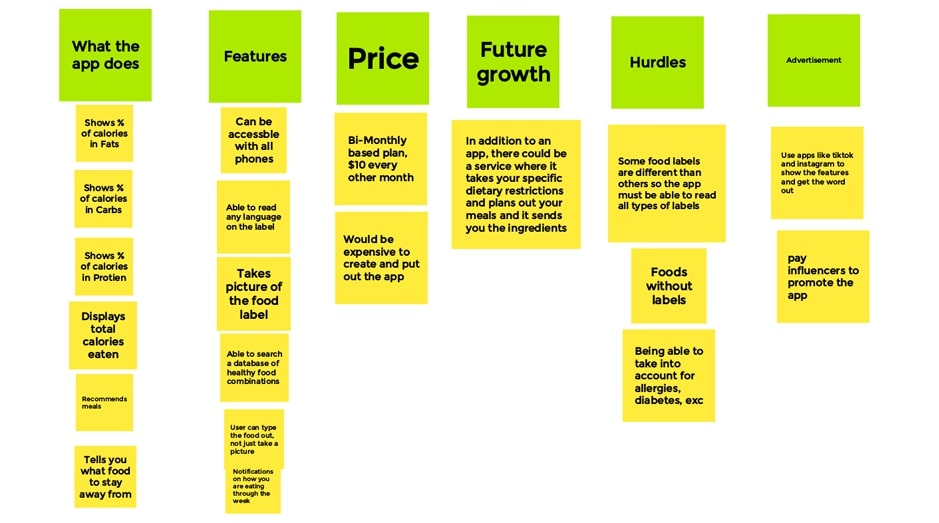
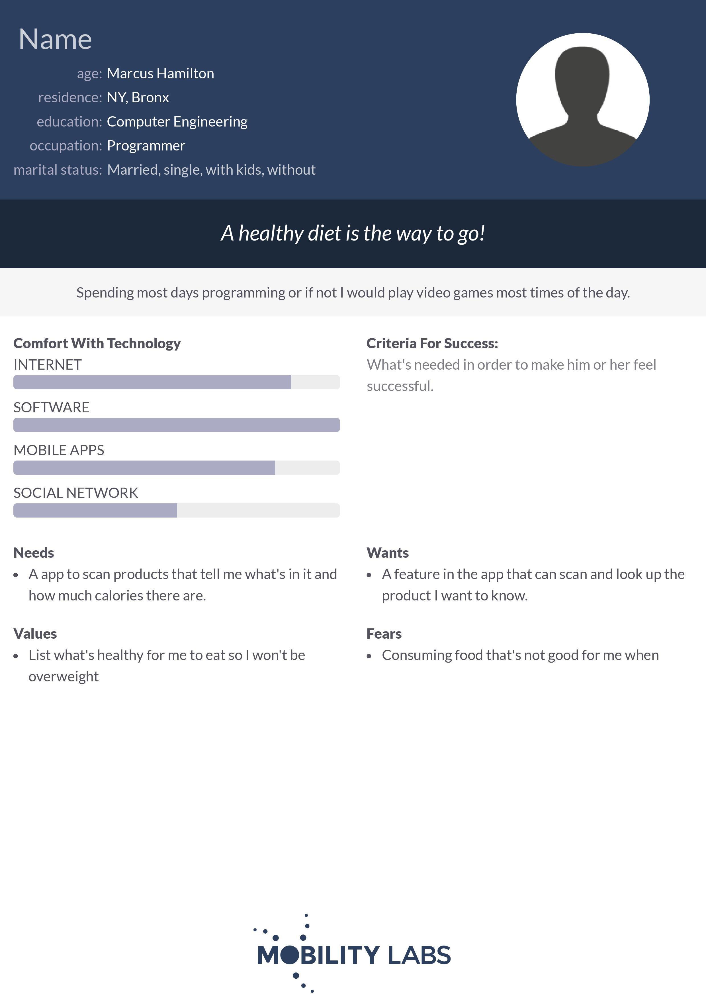
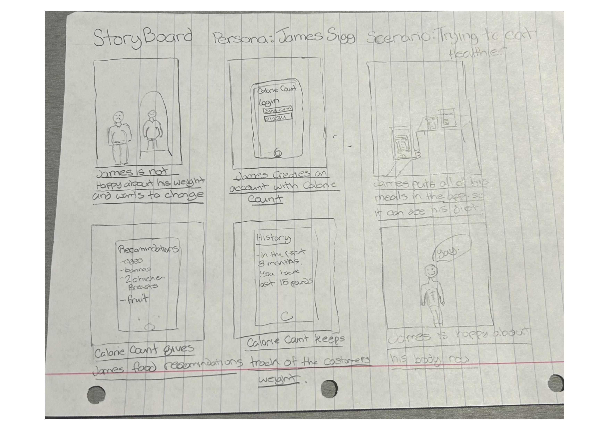
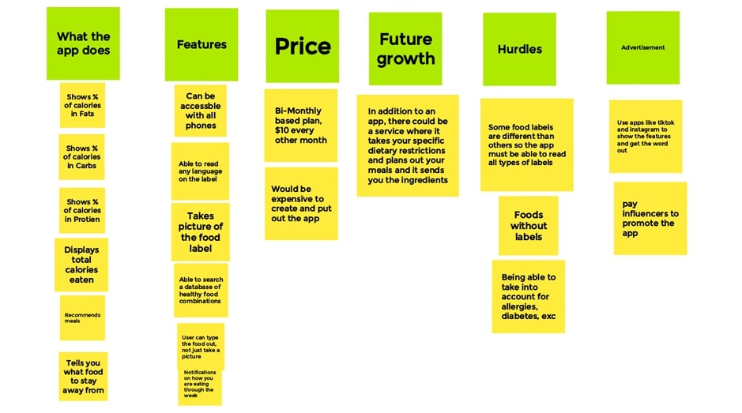
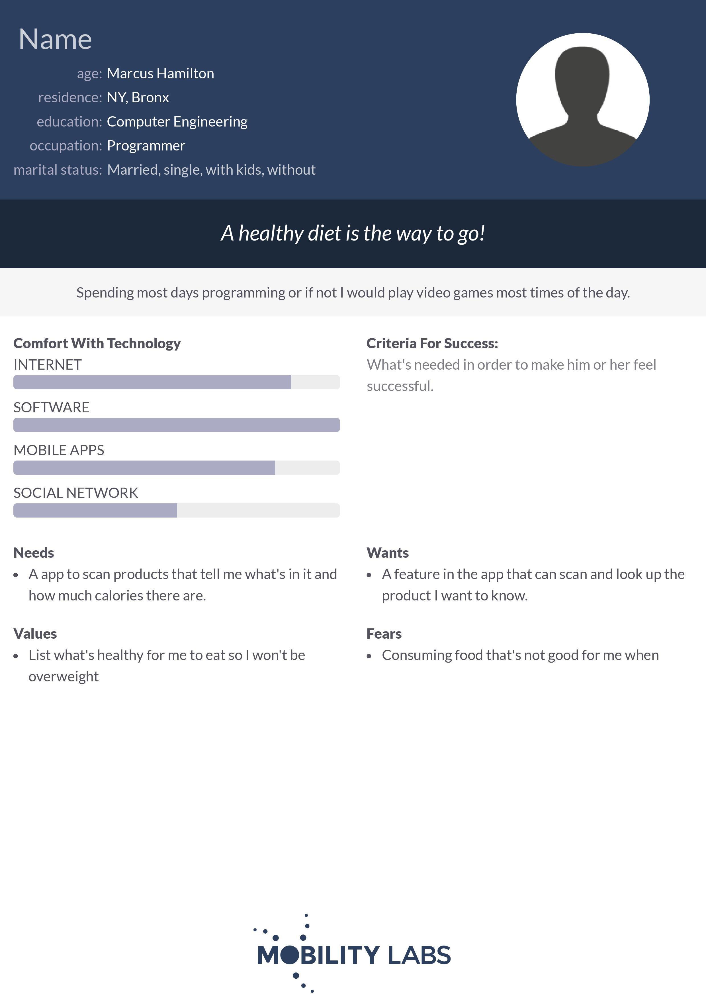
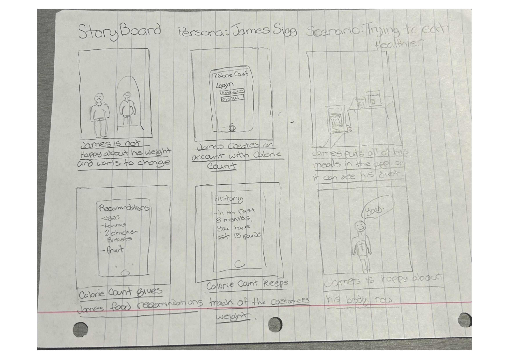

Problem statement: Tracking what you eat
Affinity diagram: CalorieCount
Team Personas: Dieters
Team Storyboards: Diet App
Software that tracks what you eat / suggests food Ideas of what our program does dealing with knowing the calories in food A software engineer watching his diet. Story of a programmer watching diet by usuing an app.